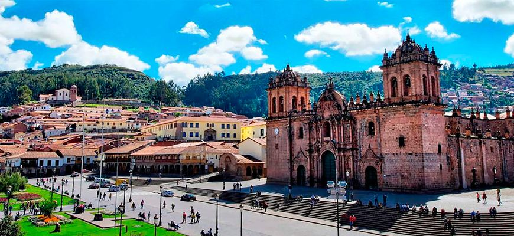
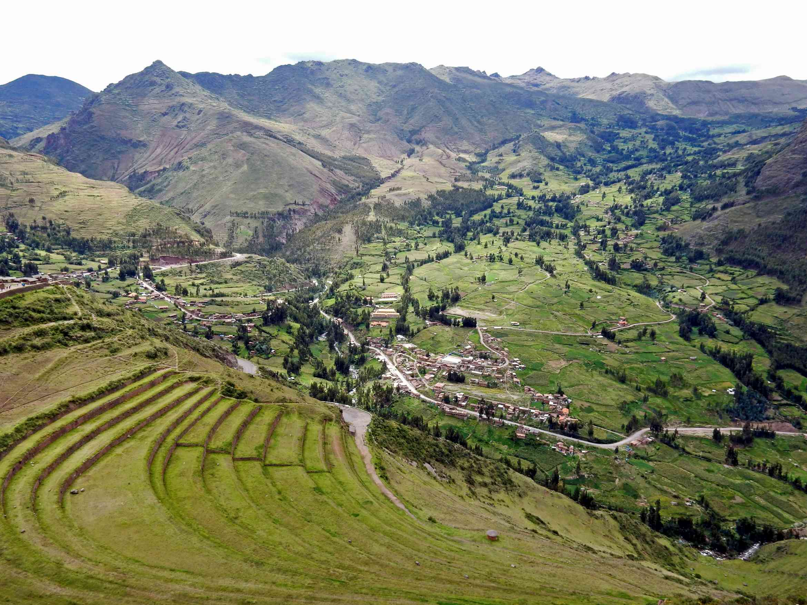

En Cusco, cada rincón está plagado de historia. Porque la antigua capital del
Perú (durante el Imperio Inca), aún mantiene vestigios de lo que fuera el poderío
más importante de esta antigua civilización.
La historia milenaria se respira en cada paso que des por las calles de sus
pueblos, que parecen haberse detenido en el tiempo. Sus ciudades, que están
plagadas de tanto misticismo que no querrás irte jamás. Y si tienes que partir,
siempre habrá ese deseo que te consume por dentro para volver lo más pronto posible.
El primer paso, es llegar al Cusco. ¿La forma más sencilla? A través de un vuelo.
Debido a la alta demanda de turistas, era imposible no contar con un aeropuerto
internacional en el Cusco, aunque la mayoría de vuelos tienen que pasar por Lima,
antes de llegar a la ciudad imperial. Desde la capital peruana,
toma una hora y 15 minutos, aproximadamente, llegar al destino elegido.
Sin embargo, no es la única vía para acceder al Cusco: para los amantes de los
viajes en carretera, existe la ruta Lima-Abancay-Cusco y Lima-Arequipa-Cusco que
toma unas 21 a 26 horas, respectivamente.

LUGARES PARA VISITAR
OTROS LUGARES POR VISITAR
Pisac
Pisac es un poblado que se encuentra ubicado a 30 km de Cusco, donde podemos encontrar las
ruinas del Valle Sagrado que forman parte de uno de los yacimientos más importantes en cuanto
a arqueología. Sus bases se asientan sobre una sólida historia, construida con cada pieza rica
en cultura por las comunidades incas.
Una localidad con mucha tradición, un pueblo andino construido sobre restos indígenas de la época
del Virrey Francisco de Toledo, donde se puede percibir la cultura en su gente, las tradiciones
como las misas quechuas, las fiestas culturales, las esculturas y edificaciones arqueológicas que
hacen parte de su encanto y hasta la forma en que se llevan los cultivos con la aplicación de la
astronomía, ciencia usada en el pasado por sus habitantes.

Machu Picchu
Esta antigua ciudad inca es uno de los tesoros más preciados de Perú. Fue construida a mediados del
siglo XV y se cree que fue una de las residencias del noveno inca del Tahuantinsuyo, Pachacútec, aunque
en ella también están los restos de un santuario. Su nombre significa montaña vieja, y hace alusión al
lugar donde se ubica, a unos 2453 msnm, en un premonitorio rocoso entre Machu Picchu y Huayna Picchu.
Es frecuente que durante la subida los viajeros sientan el mal de altura.
Actualmente, esta joya inca es uno de los focos turísticos del país. Los viajeros se acercan hasta Aguas
Calientes para iniciar la ruta inca que Hiram Bingham, el profesor de Yale, popularizó a principios del
siglo XX. El Santuario histórico de Machu Picchu está considerado como una de las siete nuevas maravillas
del mundo moderno y ha sido declarado como patrimonio de la humanidad en 1983.
Parque Nacional "Manu"
Se ubica en la cuenca del río Manu, regiones de Cusco y Madre de Dios. Es un área natural protegida que
alberga una exquisita biodiversidad reconocida a nivel mundial y resguardada del impacto humano. El parque
no sólo protege una amplia diversidad de flora conformada por 2,000 a 5,000 especies; y fauna constituida
por más de 2000 especies, incluidas especies amenazadas como el gato montés andino; sino también salvaguarda
valores culturales expresados en las formas de ocupación humana adaptada al medio ambiente en esta parte de
la Amazonía desarrollada por pueblos originarios durante siglos. Incluso, muchas de estas comunidades no han
tenido contacto con el mundo.